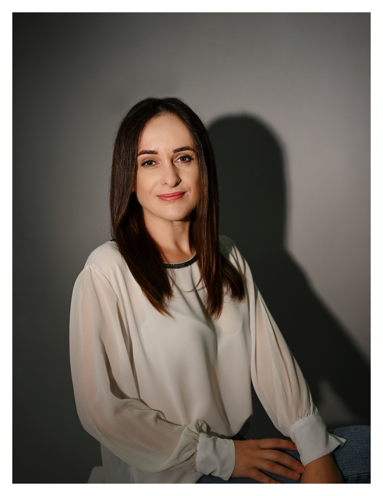

Am peste 10 ani de experiență în masaj terapeutic, relaxare și tehnici de recuperare corporală. Am lucrat atât în România, cât și pe yachturi de lux, unde am oferit servicii premium de spa.
Fiecare corp este diferit. Scopul meu este să ofer tratamente personalizate, nu doar un simplu masaj, ci o experiență de relaxare și echilibru.
Masaj terapeutic · Relaxare · Anticelulitic · Reflexoterapie · Lomi Lomi